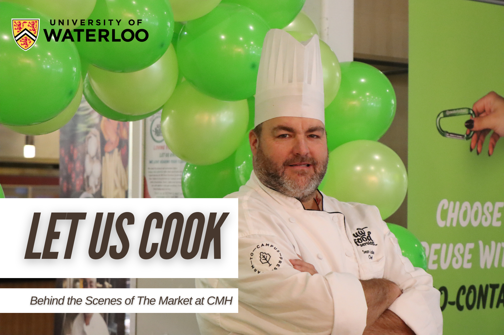

Rose Chen
My first rejection was from my childhood dream job, Dunkin' Donuts on Roblox, all because my account had chat restrictions due to my age. But I didn't wait to grow up and apply again, instead, I built my own. I co-founded a cafe game, designed the branding, logos, graphics, and UI, and called it Sabor. What started as a rewarding personal project ultimately became how I discovered my interest for branding and digital design.
Now, as a student studying Global Business & Digital Arts at the University of Waterloo, I continue to transform my skills from what I once did for fun into real-world experience, making cute graphics, designing intuitive user interfaces, and exploring social media marketing.
View my work!My Work

Co-founder of Sabor on Roblox

Choco Pie Redesign
Working with a classmate, we rebranded Lotte's iconic Choco Pie with a fresh and heartfelt concept: “You're My Favorite Choco Pie.” Using Adobe Illustrator and Adobe Express, We reimagined Choco Pie's image by creating a new logo, slogan, updated typography and color palette. This rebrand features a brand analysis, strategy, packaging, merchandise, a developed social media campaign strategy and promotional advertisement and short-form video content to market the updated product across digital platforms.
Banana Split
I designed a collaborative grocery shopping app designed to help university students save money and reduce food waste by sharing bulk purchases.
Let Us Cook
I helped create a short film highlighting the operations of The Market at CMH, a residence cafeteria at the University of Waterloo. Our 4-person crew worked closely with the cafeteria staff to follow health and safety protocols while capturing the planning and preparation that goes into every student meal. I operated the camera during filming and edited the full documentary using Adobe Premiere Pro, weaving together visuals and sound to tell a thoughtful and informative story.

Personal Brand Magazine Design
Utilizing Adobe Illustrator and Photoshop and finalized in InDesign, I designed a magazine showcasing my projects from the GBDA course, focusing on cohesive design and layout principles. Each spread reflects my approach to visual storytelling, designing a product that highlights the evolution of my work and skills throughout the course.

168 Sushi Website Redesign
I redesigned 168 Sushi's website using Figma to improve navigation, strengthen brand cohesion, and streamline access to core features such as ordering, reservations, and location selection. The updated design introduces a cohesive color scheme that enhances visual appeal and readability. By optimizing the layout and simplifying access to essential features, this redesign provides a more enjoyable and intuitive experience, encouraging users to explore the menu and choose 168 Sushi as their dining destination.